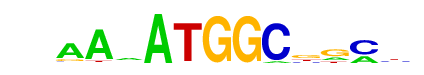
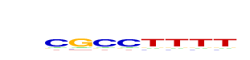

| p-value: | 1e-111 |
| log p-value: | -2.574e+02 |
| Information Content per bp: | 1.762 |
| Number of Target Sequences with motif | 671.0 |
| Percentage of Target Sequences with motif | 4.42% |
| Number of Background Sequences with motif | 544.2 |
| Percentage of Background Sequences with motif | 1.62% |
| Average Position of motif in Targets | 48.9 +/- 24.8bp |
| Average Position of motif in Background | 51.5 +/- 27.9bp |
| Strand Bias (log2 ratio + to - strand density) | 0.7 |
| Multiplicity (# of sites on avg that occur together) | 1.01 |
| Motif File: | file (matrix) reverse opposite |
| Rank | Match Score | Redundant Motif | P-value | log P-value | % of Targets | % of Background | Motif file |
| 1 | 0.936 |  | 1e-111 | -256.804247 | 2.64% | 0.67% | motif file (matrix) |
| 2 | 0.942 | 1e-92 | -213.557964 | 4.31% | 1.74% | motif file (matrix) | |
| 3 | 0.828 | 1e-77 | -179.538068 | 3.81% | 1.58% | motif file (matrix) | |
| 4 | 0.814 | 1e-50 | -116.481265 | 0.60% | 0.07% | motif file (matrix) | |
| 5 | 0.617 | 1e-46 | -107.648432 | 0.25% | 0.01% | motif file (matrix) | |
| 6 | 0.842 | 1e-44 | -102.847010 | 7.11% | 4.55% | motif file (matrix) | |
| 7 | 0.775 | 1e-24 | -57.122440 | 1.54% | 0.72% | motif file (matrix) | |
| 8 | 0.718 |  | 1e-20 | -47.996427 | 1.11% | 0.49% | motif file (matrix) |